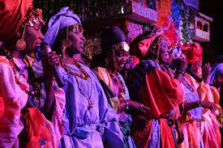

Festival de Dakar
Un événement phare de la scène culturelle sénégalaise qui réunit des artistes de musique, de danse et d'arts visuels. C'est l'occasion de découvrir le dynamisme créatif du pays.

Festival des Arts de Saly
Ce festival de musique, danse et théâtre attire des visiteurs du monde entier. Il met en avant la richesse de la culture sénégalaise à travers des performances envoûtantes.

Festival International de Jazz de Saint-Louis
Saint-Louis devient la capitale du jazz chaque année avec des concerts de musiciens internationaux et locaux dans une atmosphère conviviale et festive.